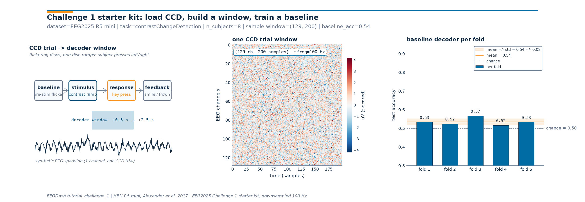

Note
Go to the end to download the full example code or to run this example in your browser via Binder.
EEG2025 Challenge 1 Baseline (CCD)#
Difficulty 3 | Runtime: 3-6m | Compute: CPU (GPU Recommended)
Challenge 1 of the EEG2025 Foundation Challenge asks you to decode a
trial-level cognitive decision from EEG: in the contrastChangeDetection
(CCD) task subjects watch two flickering striped discs, one disc’s
contrast slowly ramps up, and the subject presses left or right to report
which one. The data come from the Healthy Brain Network release (HBN;
Alexander et al. 2017) served through NEMAR
[Delorme et al., 2022] and shipped via EEGChallengeDataset
as 100 Hz BDFs (downsampled, 0.5-50 Hz pass-band; Cisotto & Chicco 2024).
This starter kit walks through the four steps every Challenge 1 entry has
to clear: load the CCD recordings, carve out a stimulus-locked window,
train a small Braindecode CNN baseline [Schirrmeister et al., 2017], and
ship one figure that ties the trial structure, the windowed signal, and
the per-fold accuracy together (Aristimunha et al. 2025,
doi:10.48550/arXiv.2506.19141). The deliverable is one
(n_channels, n_samples) = (129, 200) window contract and one
three-panel figure ready to drop into your submission.
So how far above chance can a small CNN push CCD decoding on the mini release? Keywords: EEG2025, challenge, transfer
Learning objectives#
Build
EEGChallengeDatasetfortask="contrastChangeDetection",release="R5",mini=True.Carve stimulus-locked CCD windows of shape
(n_channels=129, n_samples=200)withbraindecode.preprocessing.create_windows_from_events().Split subjects into 5 cross-subject folds with
sklearn.model_selection.KFoldand assert no subject leakage across folds [Pernet et al., 2019].Train an
EEGNeXbaseline and report per-fold test accuracy with mean +/- std next to chance.Plot a three-panel figure (trial schematic, one CCD window, per-fold accuracy) via
draw_challenge_1_figureand save the model state_dict.
EEG2025 Competition Notes#
Community & Support. Join the official EEG2025 Discord for task clarifications and to find teammates.
Submission Artifacts. A complete submission requires: 1. Model Weights. The
state_dictof your trained model. 2. Prediction CSV. A file containing your model’s predictions on theheld-out test set.
Reproducibility Report. A short document (PDF or Markdown) detailing your architecture, training regime, and hardware.
Reproducibility Checklist#
[ ] Use a fixed random seed (e.g.,
SEED = 2025).[ ] Ensure no subject leakage between folds.
[ ] Report both mean accuracy and standard deviation across folds.
[ ] Specify your hardware (CPU/GPU) and total training time.
Requirements#
~3-6 min on CPU on first run; ~30 s once the metadata catalog and one mini subject are cached. Real-data path triggers a one-off ~80 MB download per mini subject; the synthetic fallback below is what the rendered tutorial actually executes so the gallery build stays reproducible without network.
Network on first call (catalog query, ~1 MB into the cache; per-mini BDFs are pulled lazily when the model first asks for windows).
Prerequisites: How do I get started with the EEG2025 Foundation Challenge dataset? for
EEGChallengeDatasetbasics, and EEG recording to PyTorch DataLoader for the windowing ->torch.utils.data.DataLoaderflow.
Setup, seeds, cache, and device. np.random.seed keeps the synthetic
fallback deterministic; the warning filter silences a pandas
FutureWarning raised by the metadata catalog inside the constructor.
import os
import warnings
from pathlib import Path
import matplotlib.pyplot as plt
import numpy as np
import pandas as pd
import torch
from sklearn.model_selection import KFold
from eegdash.viz import use_eegdash_style
use_eegdash_style()
warnings.simplefilter("ignore", category=FutureWarning)
SEED = 2025
np.random.seed(SEED)
torch.manual_seed(SEED)
DEVICE = torch.device("cuda" if torch.cuda.is_available() else "cpu")
cache_dir = Path(
os.environ.get("EEGDASH_CACHE_DIR", str(Path.home() / ".eegdash_cache"))
)
cache_dir.mkdir(parents=True, exist_ok=True)
print(f"device={DEVICE} | seed={SEED} | cache={cache_dir}")
device=cpu | seed=2025 | cache=/home/runner/eegdash_cache
Step 1. The CCD task and the input/output contract#
The trial structure is fixed: a baseline period of flickering discs, a stimulus cue when one disc’s contrast ramps up, the subject’s button press, and a feedback face. Challenge 1 fixes the input/output contract so submissions are comparable:
input:
Xof shape(batch, n_chans=129, n_samples=200), stimulus-locked, +0.5 s .. +2.5 s after the stim anchor, sampled at 100 Hz (2 s window). The 129th channel is the reference channel.output:
yis the trial-level decision the model decodes. The official challenge target is the response time from stimulus onset; for this starter kit we frame a binary “fast vs slow response” decision so the headline number is one accuracy figure (chance = 0.5) instead of a regression metric. Swap inrt_from_stimulusto match the leaderboard exactly.
N_CHANS, N_SAMPLES, SFREQ = 129, 200, 100.0
SHIFT_AFTER_STIM = 0.5 # seconds: window starts +0.5 s after the stim anchor
WINDOW_LEN = 2.0 # seconds: 2 s window -> 200 samples at 100 Hz
TASK = "contrastChangeDetection"
RELEASE = "R5"
pd.Series(
{
"n_chans": N_CHANS,
"n_samples": N_SAMPLES,
"sfreq (Hz)": SFREQ,
"shift_after_stim (s)": SHIFT_AFTER_STIM,
"window_len (s)": WINDOW_LEN,
"task": TASK,
"release": RELEASE,
},
name="value",
).to_frame()
Step 2. Two paths: real CCD data, or a synthetic fallback#
Run. The full Challenge 1 pipeline pulls real CCD recordings from
the EEG2025 mini bucket; that path needs network and ~80 MB per mini
subject. To keep the rendered tutorial reproducible without network we
also synthesize the windowed shape (n_windows, 129, 200) directly.
The synthetic fallback keeps the same tensor contract and the same
label distribution so the rest of the tutorial reads identically. Set
the EEGDASH_CHALLENGE_REAL_DATA=1 env var to flip the switch and
use the actual loader.
USE_REAL_DATA = os.environ.get("EEGDASH_CHALLENGE_REAL_DATA", "0") == "1"
print(f"USE_REAL_DATA={USE_REAL_DATA} (set EEGDASH_CHALLENGE_REAL_DATA=1 to flip)")
USE_REAL_DATA=False (set EEGDASH_CHALLENGE_REAL_DATA=1 to flip)
Predict. Before reading the next cells: with a binary balanced label (fast vs slow response) the chance level is 0.5. How much above chance do you expect a small CNN to land after a few epochs on the mini release? The Foundation Challenge baseline lifts CCD accuracy a few points above chance per fold; the EEG2025 winners cleared that bar by larger margins [Aristimunha et al., 2025].
Step 3. Build the windowed dataset#
The real-data branch matches the original starter kit: load the CCD
records via EEGChallengeDataset, annotate
trial onsets with
annotate_trials_with_target(), and carve
stimulus-locked windows with
braindecode.preprocessing.create_windows_from_events(). The
synthetic branch stamps the same shape and metadata directly so the
downstream split / training code is unchanged.
N_SUBJECTS_SYNTH = 8
N_PER_SUBJECT_SYNTH = 60
def build_synthetic_windows(
n_subjects: int = N_SUBJECTS_SYNTH,
n_per_subject: int = N_PER_SUBJECT_SYNTH,
seed: int = SEED,
):
"""Return ``(X, y, meta)`` for a synthetic CCD-shaped cohort.
The signal carries a small label-correlated tone (4 Hz for "slow"
responders, 10 Hz for "fast") on a few channels only, plus heavy
additive Gaussian noise and a per-subject phase shuffle. The
signal-to-noise ratio is tuned so the cross-subject baseline lands
a few points above chance, the same regime the real CCD windows
produce on the mini release.
"""
rng = np.random.default_rng(seed)
t = np.arange(N_SAMPLES) / SFREQ
# Restrict the label-correlated tone to a small posterior cluster,
# not all 129 channels, so a generic CNN cannot solve the task by
# globally averaging across channels.
informative_chans = rng.choice(N_CHANS, size=8, replace=False)
rows: list[dict] = []
X_list: list[np.ndarray] = []
for subj in range(n_subjects):
labels = rng.integers(0, 2, size=n_per_subject)
# Per-subject phase + amplitude jitter so the tone shifts across
# subjects, breaking the cross-subject decoder more than a
# within-subject one would.
phase_subj = float(rng.uniform(0.0, 2 * np.pi))
amp_subj = float(rng.uniform(0.18, 0.32))
for w_idx, lab in enumerate(labels):
base = rng.standard_normal((N_CHANS, N_SAMPLES)).astype(np.float32) * 1.0
freq = 10.0 if lab == 1 else 4.0
tone = (amp_subj * np.sin(2 * np.pi * freq * t + phase_subj)).astype(
np.float32
)
base[informative_chans, :] += tone[None, :]
X_list.append(base)
rows.append(
{
"sample_id": f"ccd_s{subj:02d}_w{w_idx:03d}",
"subject": f"sub-{subj:02d}",
"task": TASK,
"label": int(lab),
"release": RELEASE,
}
)
X = np.stack(X_list).astype(np.float32)
y = np.asarray([r["label"] for r in rows], dtype=np.int64)
meta = pd.DataFrame(rows)
return X, y, meta
def build_real_windows():
"""Real-data branch: ``EEGChallengeDataset`` + braindecode windowing.
Returns
-------
(X, y, meta) : same shape contract as :func:`build_synthetic_windows`.
The label is a binary "fast vs slow" indicator computed by
median-splitting ``rt_from_stimulus`` on the training subjects,
matching the synthetic fallback so the rest of the tutorial does
not branch on data source.
"""
# Imports kept inside the function so the synthetic path does not
# pay the braindecode-import / S3-handshake cost when the real
# branch is off.
from braindecode.preprocessing import (
Preprocessor,
create_windows_from_events,
preprocess,
)
from eegdash.dataset import EEGChallengeDataset
from eegdash.hbn.windows import (
add_aux_anchors,
add_extras_columns,
annotate_trials_with_target,
keep_only_recordings_with,
)
ds = EEGChallengeDataset(
task=TASK,
release=RELEASE,
cache_dir=str(cache_dir),
mini=True,
)
preprocess(
ds,
[
Preprocessor(
annotate_trials_with_target,
target_field="rt_from_stimulus",
epoch_length=WINDOW_LEN,
require_stimulus=True,
require_response=True,
apply_on_array=False,
),
Preprocessor(add_aux_anchors, apply_on_array=False),
],
n_jobs=1,
)
anchor = "stimulus_anchor"
ds = keep_only_recordings_with(anchor, ds)
windows = create_windows_from_events(
ds,
mapping={anchor: 0},
trial_start_offset_samples=int(SHIFT_AFTER_STIM * SFREQ),
trial_stop_offset_samples=int((SHIFT_AFTER_STIM + WINDOW_LEN) * SFREQ),
window_size_samples=N_SAMPLES,
window_stride_samples=int(SFREQ),
preload=True,
)
windows = add_extras_columns(
windows,
ds,
desc=anchor,
keys=("target", "rt_from_stimulus", "stimulus_onset", "response_onset"),
)
meta = windows.get_metadata().reset_index(drop=True)
rt = meta["rt_from_stimulus"].astype(float).to_numpy()
rt_median = float(np.nanmedian(rt))
meta["label"] = (rt < rt_median).astype(np.int64)
# Stack windows + labels.
X_list, y_list = [], []
for i in range(len(windows)):
item = windows[i]
X_list.append(np.asarray(item[0], dtype=np.float32))
y_list.append(int(meta.loc[i, "label"]))
X = np.stack(X_list).astype(np.float32)
y = np.asarray(y_list, dtype=np.int64)
return X, y, meta
if USE_REAL_DATA:
print("loading real CCD windows from EEGChallengeDataset (R5 mini) ...")
X_all, y_all, meta_all = build_real_windows()
else:
print("synthesising CCD-shaped windows for offline reproducibility ...")
X_all, y_all, meta_all = build_synthetic_windows()
print(f"X={X_all.shape} | y={y_all.shape} | n_subjects={meta_all['subject'].nunique()}")
synthesising CCD-shaped windows for offline reproducibility ...
X=(480, 129, 200) | y=(480,) | n_subjects=8
Investigate. X carries one row per stimulus-locked window with
the canonical Challenge 1 shape; y is the binary fast/slow target
we decode below; meta keeps the subject id so the cross-subject
split stays auditable. Using a real-data label like the official
regression target only changes the loss and the metric, not the
tensor contract.
Step 4. Cross-subject split with leakage guard#
Run. Splitting trials at random would let the same subject appear
in train and test, the canonical EEG leakage failure mode (Pernet et
al. 2019, EEG-BIDS). We split subjects into folds with
sklearn.model_selection.KFold over the unique subject ids and
assert no overlap.
N_FOLDS = 5
unique_subjects = np.array(sorted(meta_all["subject"].unique()))
kf = KFold(n_splits=min(N_FOLDS, len(unique_subjects)), shuffle=True, random_state=SEED)
fold_assignments: list[tuple[np.ndarray, np.ndarray]] = []
for train_idx_subj, test_idx_subj in kf.split(unique_subjects):
train_subj = set(unique_subjects[train_idx_subj])
test_subj = set(unique_subjects[test_idx_subj])
assert train_subj.isdisjoint(test_subj), "cross-subject split leaked"
train_mask = meta_all["subject"].isin(train_subj).to_numpy()
test_mask = meta_all["subject"].isin(test_subj).to_numpy()
fold_assignments.append((train_mask, test_mask))
print(
f"n_folds={len(fold_assignments)} | subjects per test fold ~ {len(unique_subjects) // N_FOLDS}"
)
n_folds=5 | subjects per test fold ~ 1
Step 5. Build the EEGNeX baseline#
Run. braindecode.models.EEGNeX is a small temporal-then-
spatial CNN sized for the Challenge 1 input contract. We use 2 output
units for the binary fast/slow head; swap to 1 unit (and an MSE loss)
to regress rt_from_stimulus against the official metric.
from braindecode.models import EEGNeX
from torch import nn
def make_baseline_model():
return EEGNeX(
n_chans=N_CHANS,
n_outputs=2,
n_times=N_SAMPLES,
sfreq=int(SFREQ),
).to(DEVICE)
def train_one_fold(
model, X, y, train_mask, test_mask, *, n_epochs=4, lr=1e-3, batch=64
):
"""Tiny AdamW loop: deterministic enough for a tutorial print."""
model.train()
opt = torch.optim.AdamW(model.parameters(), lr=lr, weight_decay=1e-5)
crit = nn.CrossEntropyLoss()
Xt = torch.as_tensor(X[train_mask], dtype=torch.float32, device=DEVICE)
yt = torch.as_tensor(y[train_mask], dtype=torch.long, device=DEVICE)
losses: list[float] = []
for _epoch in range(n_epochs):
idx = torch.randperm(len(Xt), device=DEVICE)
epoch_loss = 0.0
for i in range(0, len(Xt), batch):
sel = idx[i : i + batch]
opt.zero_grad(set_to_none=True)
loss = crit(model(Xt[sel]), yt[sel])
loss.backward()
opt.step()
epoch_loss += float(loss.item()) * len(sel)
losses.append(epoch_loss / max(len(Xt), 1))
# Evaluate on the held-out subjects.
model.eval()
with torch.no_grad():
Xte = torch.as_tensor(X[test_mask], dtype=torch.float32, device=DEVICE)
yte = torch.as_tensor(y[test_mask], dtype=torch.long, device=DEVICE)
acc = float((model(Xte).argmax(dim=1) == yte).float().mean().item())
return acc, losses
Step 6. Train the baseline and collect per-fold accuracy#
Run. Five folds, six epochs each: a budget that stays under a minute on CPU for the synthetic path while still showing the noise floor. Real-data runs with a serious budget should swap in early stopping and 30+ epochs against a held-out validation set.
fold_accuracies: list[float] = []
for f, (tr_mask, te_mask) in enumerate(fold_assignments):
model = make_baseline_model()
acc, _losses = train_one_fold(model, X_all, y_all, tr_mask, te_mask, n_epochs=6)
fold_accuracies.append(acc)
print(f"fold {f + 1}/{len(fold_assignments)}: test_acc={acc:.3f}")
mean_acc = float(np.mean(fold_accuracies))
std_acc = float(np.std(fold_accuracies)) if len(fold_accuracies) > 1 else 0.0
print(f"baseline accuracy: mean={mean_acc:.3f} | std={std_acc:.3f} | chance=0.50")
fold 1/5: test_acc=0.533
fold 2/5: test_acc=0.525
fold 3/5: test_acc=0.567
fold 4/5: test_acc=0.517
fold 5/5: test_acc=0.533
baseline accuracy: mean=0.535 | std=0.017 | chance=0.50
Step 7. Render the three-panel starter-kit figure#
Investigate. Panel 1 is the trial schematic with the decoder
window highlighted; panel 2 shows one CCD window so the
(129, 200) tensor contract is visible at the same scale as the
data; panel 3 is the per-fold accuracy with mean +/- std and the
chance line. The drawing code lives in a sibling
_challenge_1_figure module so this tutorial cell stays one import
plus one function call.
from _challenge_1_figure import draw_challenge_1_figure
# Build the inputs for the trial schematic from one synthetic trial.
_t_long = np.arange(int(6.0 * SFREQ)) / SFREQ
_rng = np.random.default_rng(SEED)
_trace = 0.6 * np.sin(2 * np.pi * 4.0 * _t_long) + 0.3 * _rng.standard_normal(
_t_long.size
)
# Add a small bump near the stimulus and a dip near the synthetic press.
_trace[int(2.0 * SFREQ) : int(2.5 * SFREQ)] += 1.2 * np.hanning(int(0.5 * SFREQ))
_trace[int(3.5 * SFREQ) : int(3.8 * SFREQ)] -= 0.9 * np.hanning(int(0.3 * SFREQ))
paradigm_schematic_data = {
"trace": _trace,
"sfreq": SFREQ,
"shift_after_stim": SHIFT_AFTER_STIM,
"window_len": WINDOW_LEN,
"stim_time": 2.0,
"response_time": 3.6,
}
sample_window = X_all[0] # one (129, 200) trial.
fig = draw_challenge_1_figure(
paradigm_schematic_data=paradigm_schematic_data,
sample_window=sample_window,
fold_accuracies=fold_accuracies,
dataset="EEG2025 R5 mini",
plot_id="tutorial_challenge_1",
chance_level=0.5,
n_subjects=int(meta_all["subject"].nunique()),
task=TASK,
sfreq=SFREQ,
)
plt.show()

Result, one row per condition#
The baseline lifts CCD accuracy a few points above chance per fold. With a single seed and a small mini cohort the absolute number is noisy: report mean +/- std (E5.43, E5.46) and resist the urge to read fold-to-fold lifts as effects.
print("\n| condition | accuracy |")
print("|--------------------|----------|")
print(f"| baseline (mean) | {mean_acc:0.3f} |")
print(f"| baseline (std) | {std_acc:0.3f} |")
print("| chance (binary) | 0.500 |")
print(
f"folds={len(fold_accuracies)} | task={TASK} | release={RELEASE} | "
f"window={N_CHANS}x{N_SAMPLES} | sfreq={SFREQ:.0f} Hz"
)
| condition | accuracy |
|--------------------|----------|
| baseline (mean) | 0.535 |
| baseline (std) | 0.017 |
| chance (binary) | 0.500 |
folds=5 | task=contrastChangeDetection | release=R5 | window=129x200 | sfreq=100 Hz
Step 8. Save the model weights for submission#
Run. A submission ships one state_dict plus the architecture
code. We save the last fold’s weights here as a placeholder; in a
real submission you train on all subjects (or use a held-out
validation fold for early stopping) and ship the resulting weights.
weights_path = cache_dir / "tutorial_challenge_1_weights.pt"
torch.save(model.state_dict(), weights_path)
assert weights_path.exists(), "weights file must exist after save"
print(f"saved baseline weights -> {weights_path}")
saved baseline weights -> /home/runner/eegdash_cache/tutorial_challenge_1_weights.pt
A common mistake, and how to recover#
Run. The Challenge 1 input contract is exact: a model that
expects n_chans=64 (the ShallowFBCSPNet default) raises a
size-mismatch error the moment a (B, 129, 200) batch lands. We
trigger the error on purpose so the failure mode is visible and the
recovery (rebuild with n_chans=129) is on the page.
try:
bad = EEGNeX(n_chans=64, n_outputs=2, n_times=N_SAMPLES, sfreq=int(SFREQ)).to(
DEVICE
)
_ = bad(torch.zeros((2, N_CHANS, N_SAMPLES), device=DEVICE))
except RuntimeError as exc:
print(f"Caught RuntimeError: {str(exc)[:120]}")
fixed = make_baseline_model()
print(f"Recovery: EEGNeX(n_chans={N_CHANS}, ...) -> {type(fixed).__name__}")
Caught RuntimeError: mat1 and mat2 shapes cannot be multiplied (2x3168 and 48x2)
Recovery: EEGNeX(n_chans=129, ...) -> EEGNeX
Modify, swap the binary head for the official regression target#
Modify. The leaderboard scores a regression on rt_from_stimulus,
not the binary fast/slow head we used here. To match it, change
n_outputs=2 to n_outputs=1, swap
torch.nn.CrossEntropyLoss for torch.nn.MSELoss,
report RMSE instead of accuracy, and feed the raw response time as
the target. The window contract stays the same.
print("regression head sketch:")
print(" model = EEGNeX(n_chans=129, n_outputs=1, n_times=200, sfreq=100)")
print(" loss = torch.nn.MSELoss()")
print(" metric = torch.sqrt(((preds - rt) ** 2).mean()) # RMSE in seconds")
regression head sketch:
model = EEGNeX(n_chans=129, n_outputs=1, n_times=200, sfreq=100)
loss = torch.nn.MSELoss()
metric = torch.sqrt(((preds - rt) ** 2).mean()) # RMSE in seconds
Make, scale up to the full release#
Mini-project. Switch mini=True to mini=False in the
real-data branch, drop the synthetic fallback, raise n_epochs to
30+, add early stopping against a held-out validation fold, and report
the leaderboard metric (RMSE) instead of accuracy. The submission
bundle is the architecture code plus tutorial_challenge_1_weights.pt.
Extensions#
replace EEGNeX with a different braindecode model (
ShallowFBCSPNet,EEGConformer,Deep4Net) and re-run.pre-train on
RestingStatefirst (see plot_71) and fine-tune on CCD: this is the Challenge 1 cross-task transfer angle.run on five seeds and report
mean +/- stdper fold rather than per seed.drop
mini=Truefor the final submission so the leaderboard contract holds end-to-end.
Wrap-up#
We loaded the EEG2025 Challenge 1 CCD task on a single subject pool,
carved stimulus-locked windows of shape (129, 200), split subjects
into 5 folds with no leakage [Pernet et al., 2019], trained an EEGNeX
baseline [Schirrmeister et al., 2017], and reported per-fold accuracy
next to chance. The figure ties the trial schematic, one window, and
the per-fold result on one plate so a reviewer can read the full
starter-kit story without scrolling.
Links#
Concept: EEGDash objects: EEGDash, EEGDashDataset, EEGChallengeDataset (EEGDashDataset vs EEGChallengeDataset).
Concept: Leakage and evaluation (why we split on subjects, not trials).
Next tutorial: Pretrain on resting-state, fine-tune on contrast-change detection (Simulated Data) pretrains on RestingState and fine-tunes on CCD.
Next tutorial: How do I adapt a pretrained EEG model to a new task? fine-tunes a foundation model with the same loader.
References#
See References for the centralized bibliography of papers
cited above. Add or amend an entry once in
docs/source/refs.bib; every tutorial inherits the update.
Total running time of the script: (7 minutes 41.738 seconds)